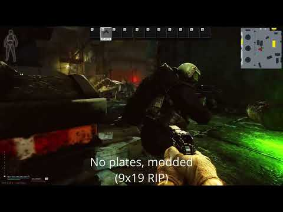

Covered Up Armpits
- Downloads
- 3,612
- Favourites
- 0
Showcase

Overview
In SPT 3.9, the armpit hitboxes are covered by insertable ballistic front plates but they are not covered by unremovable soft armor. This matters for players in early-game that are using rigs with only soft armor like the rat rig and find themselves getting one-tapped in the thorax via a low-pen bullet into the armpit.
This mod expands the hitboxes in the front soft armor for all body armor/chest rigs to cover the armpit hitboxes. As a result, the armpit is now protected by the armor class of the soft front chest insert.
In addition to this, if a body armor/chest rig does not have any soft side protection like the 6B2 body armor, the front soft armor will also cover the hitboxes on the lower left and lower right sides of the thorax. Buffs to all soft armor-only vest and rigs!
Install
Extract directly into the SPT folder. The mod can be located in users/mods/.
Background
I made this mod due to finding early-wipe gameplay extremely captivating except for occasionally getting one-tapped in the armpit by ammo run by scavs and low-level PMCs. Although insertable plates protect the armpits in the current version of SPT, it can take a while before a player can upgrade to those rigs reliably if they are doing something like a FM-less run.